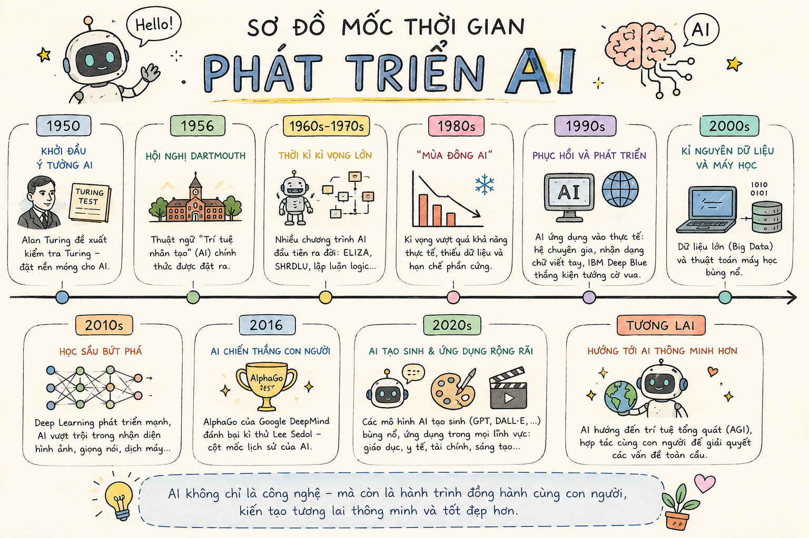

"Hãy chia sẻ những điều bạn đã biết và những điều bạn muốn biết về trí thông minh nhân tạo (AI). Liệu trong tương lai, những cỗ máy thông minh sẽ trở thành trợ thủ đắc lực hay sẽ thách thức chính trí tuệ của con người?"
Tác giả: Ri-sát Oát-xơn (Richard Watson, sinh năm 1961) là nhà tương lai học, giảng viên đại học người Anh, cây bút nổi tiếng về các phát minh, sáng chế và phân tích xu hướng toàn cầu.
Xuất xứ: Trích từ tác phẩm "50 ý tưởng về tương lai" (2012, bản dịch Việt ngữ năm 2019).
Thể loại & Thao tác văn bản: Văn bản thông tin (Thuyết minh giải thích hiện tượng khoa học & dự báo tương lai).
Chủ đề: Sự phát triển của Trí thông minh nhân tạo (AI), phân loại AI, các dự báo lịch sử và những suy tư về viễn cảnh tương lai nhân loại.
📌 Định nghĩa thuật ngữ:
Thuật ngữ "Trí thông minh nhân tạo" (Artificial Intelligence - AI) được nhà khoa học máy tính người Mỹ Giôn Mác Cát-thi (John McCarthy) đặt ra vào năm 1956.
Sơ đồ tóm tắt các mốc thời gian và thành tựu của AI (Hình minh họa 1 trong văn bản)

Lưu ý: Đảm bảo tập tin ảnh được đặt tên h1.png nằm cùng thư mục để hiển thị trực quan.
| Mốc thời gian | Sự kiện / Dự báo chính |
|---|---|
| 1990 | Tập đoàn iRobot được thành lập để sản xuất rô-bốt công nghiệp & gia dụng. |
| 2011 | Cỗ máy Watson (IBM) chiến thắng chương trình truyền hình Jeopardy! |
| 2027 | Máy nướng bánh giá 79 USD vượt qua bài kiểm tra Turing (Turing test). |
| 2040 | Điện thoại thông minh 750 USD có năng lực xử lý tương đương não người. |
| 2042 | Virus máy tính vô hiệu hóa 90% máy móc. |
| 2050 | Số lượng rô-bốt thông minh chính thức vượt qua số lượng con người. |
| 2054 | Máy móc bắt đầu biết vẽ tranh và soạn nhạc sáng tạo. |
| 2069 | Máy móc đòi hỏi quyền bình đẳng với con người. |
Quan điểm lạc quan / khẳng định: Ray Kurzweil đánh cược rằng máy tính sẽ vượt qua bài kiểm tra Turing vào năm 2029.
Quan điểm hoài nghi / phản bác: Bill Calvin cho rằng não người quá phức tạp, máy tính không thể mô phỏng trọn vẹn, hoặc nếu có sẽ mang cả những điểm yếu và cảm xúc không toàn vẹn.
Hai câu hỏi lớn của tác giả:
Bài kiểm tra Turing (Turing Test) do nhà toán học Alan Turing đưa ra năm 1950. Một máy tính được coi là vượt qua bài kiểm tra nếu người đối thoại không thể phân biệt được câu trả lời đó là của máy hay của con người!
Sử dụng các công cụ sơ đồ tư duy trực tuyến hoặc phương tiện phi ngôn ngữ (infographic) để tóm tắt nội dung các văn bản thông tin phức tạp một cách khoa học và ngắn gọn.
Khi đọc văn bản thông tin dự báo khoa học, cần phân biệt rõ giữa dữ liệu thực tế/mốc lịch sử đã xảy ra và các giả thuyết/dự báo tương lai của các nhà khoa học.
Trả lời 10 câu hỏi để củng cố kiến thức văn bản Trí Thông Minh Nhân Tạo!
Bài 1 (Phân tích cấu trúc văn bản): Xác định các thành phần cấu trúc của văn bản thông tin Trí thông minh nhân tạo (Sapo, Các mục chính, Phương tiện phi ngôn ngữ, Lời kết).
Bài 2 (Viết đoạn văn ngắn 150 chữ): Tóm tắt những thông tin thú vị nhất mà bạn thu thập được về AI sau khi học xong văn bản này.
- Sapo/Mở đầu: Dẫn dắt từ lịch sử đặt thuật ngữ năm 1956 đến câu hỏi gợi mở thách thức.
- Các mục chính: Tốc độ xử lý -> Phân loại AI mạnh/yếu -> Quan điểm trái chiều khoa học -> 2 câu hỏi cốt lõi về tương lai.
- Phương tiện phi ngôn ngữ: Sơ đồ dòng thời gian từ 1990 đến 2069.
- Kết luận: Thông điệp hài hước nhưng sâu sắc về thế giới tương lai.
Văn bản "Trí thông minh nhân tạo" của Richard Watson đã mang đến cho em những góc nhìn vô cùng kỳ thú về sự phát triển của công nghệ. Điểm ấn tượng nhất là sự gia tăng vượt bậc của tốc độ xử lý máy tính: từ mức chỉ bằng bộ não con cá nhỏ năm 2008, dự báo đến năm 2040 máy tính sẽ đạt \(100\) nghìn tỉ lệnh/giây, tương đương bộ não con người. Thêm vào đó, sự phân biệt giữa "AI yếu" (chỉ lập trình sẵn) và "AI mạnh" (có khả năng tự học, phản ứng với sự cố) giúp em hiểu rõ hơn về bản chất của trí tuệ nhân tạo. Đặc biệt, sơ đồ tiến trình lịch sử dự báo những mốc thời gian giật mình như máy tính vẽ tranh (2054) hay máy móc đòi quyền bình đẳng (2069). Văn bản không chỉ cung cấp tri thức mà còn gợi mở trách nhiệm của con người trong việc làm chủ công nghệ ở tương lai.